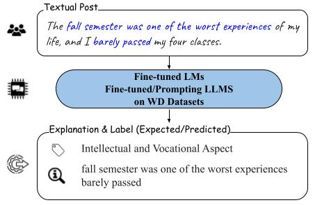
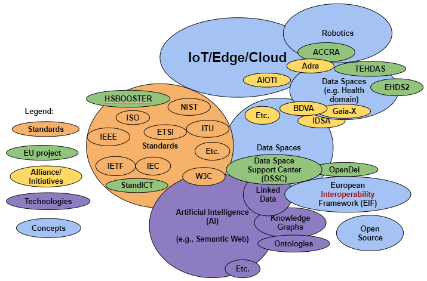

About Me
I am a fourth-year Ph.D. student in Computer Science at the University of Maryland, Baltimore County (UMBC), where I am advised by Dr. Manas Gaur and Dr. Frank Ferraro. My research focuses on Natural Language Processing (NLP) and Machine Learning, with a specialization in the explainability and robustness of language models and large language models. I am passionate about advancing the understanding and application of NLP to create more interpretable and reliable AI systems.
I publish under the names Ali Mohammadi and Seyedali Mohammadi, reflecting my work across diverse collaborations and research topics.
Publications

WellDunn: On the Robustness and Explainability of Language Models and Large Language Models in Identifying Wellness Dimensions
Mohammadi, S. et al. BlackboxNLP at EMNLP 2024. Association for Computational Linguistics

IoT-Based Preventive Mental Health Using Knowledge Graphs and Standards for Better Well-Being
Gyrard, A., Mohammadi, S. et al. arXiv 2024. arXiv

REASONS: A benchmark for REtrieval and Automated citationS Of scieNtific Sentences using Public and Proprietary LLMs
Tilwani, D., Saxena, Y., Mohammadi, A. et al. arXiv 2024. arXiv